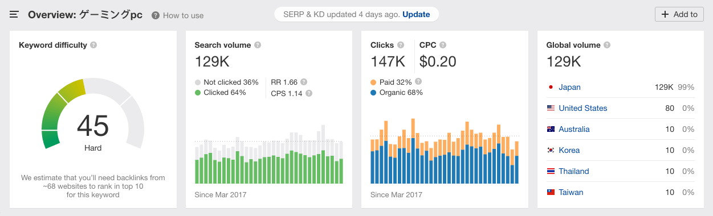
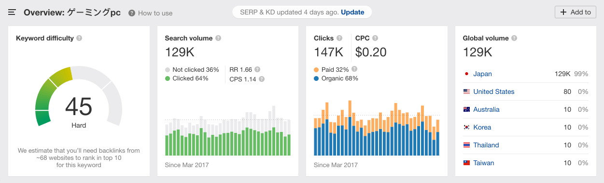
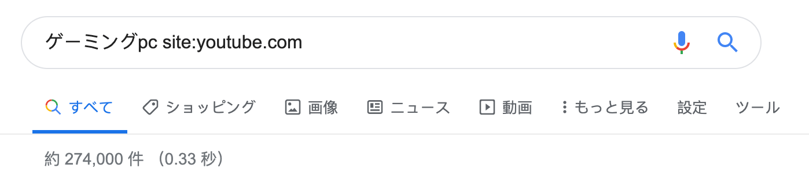
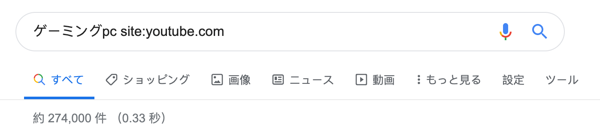
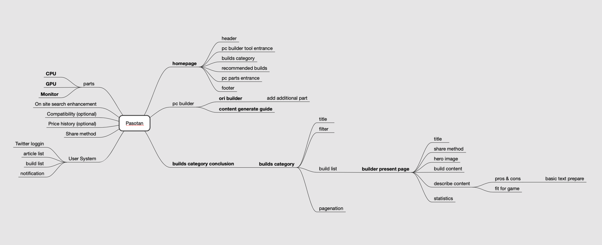

パソ探ケーススタディ
パソ探.comは、2019年1月に開始された私たちのチームのサイドプロジェクトです。当初はただメンバーの趣味であったPCモニターの情報提供を目指していったものなんでした。 このプロトタイプを実際のウェブサービスに変えるとき、私はパソ探に参加しました。
デザイン目標
最初のパソ探は単純なブログサイトであった。 同僚が作成したコンテンツを提示すると、ユーザーは興味のあるモニターを検索してサイトにアクセスできます。

私たちの目標は、パソ探がより多くのトラフィックを獲得し、利益を上げることができるビジネスモデルを構築するようになります。
私の役割
2019年9月から現在まで、プログラマーとコンテンツプロデューサーで3人の小さなチームを率いています。 アジャイル開発チームなので、私はプロダクトマネージャーとUX / UIデザイナーを務めています。
私の具体的な仕事内容は：
- パソ探のビジネス戦略を定義すること
- 情報アーキテクチャとユーザーエクスペリエンスをデザインすることこと
- コンテンツプロデューサーとグロースハックプランを実行する
デザインの課題
パソ探に新しいデザインをつけるには、いくつかの課題がありました。
- パソ探の持続可能なビジネスモデルとは何ですか？
- このビジネスモデルでは、サイトのコンテンツの構造はなんですか？
- このコンテンツをより多くのユーザーに見つけてもらうために何ができますか？
デザインリサーチ
パソ探は大規模な投資プロジェクトではなかったため、トラフィックがあり競争は少ないブルーオーシャンマーケットを見つける必要がありました。 私はahrefs.comを通じてマーケティング調査を行いました。
 

その結果、「ゲーミングpc」などの一般的なキーワードより、「自作pc」というキーワードは競争圧力は低くなりましたが、ユーザーはまだ十分であることがわかりました。 有料広告のトラフィックも少ないということは、SEM（サーチエンジンマーケティング）を行っているときに、ユーザーにパソ探のコンテンツをより簡単に表示し、広告費用を削減できることを明らかにする。
 

また、YouTubeで「自作pc」の検索結果が「ゲーミングpc」の検索結果よりも多いことがわかりました。この検索結果は、分野の人気を示すだけでなく、コンテンツを配布する良い方法もわかりました。
最後になりましたが、「自作PC」は「PCモニター」と関連もありました。そのため、低コストでサイトを新しい分野にすばやく移行できます。

リサーチ結果をチームメンバーにデモした後、私はこのサイトをアフィリエイトサイトに変え、自作PCに関する情報を提供し、他のオンラインeコマースサイトにユーザーを転送するとアフィリエイトを受け取ることに決めた。
情報アーキテクチャデザイン
自作PCを構築する際には、重要な情報とそれらの関係を理解するために、同僚と一緒に自分のパーソナルコンピューターを構築しました。それは本当にお金と時間をかかったけど、どういうわけかパソ探のやりがいがあることを証明しました。

そのうちにPCを自作るユーザーにとって不可欠な2つのことをまとめました：
- 自作PCを作るガイド
- 他人のビルドを参照する（この機能はまだ開発中ですから、申し訳ありませんが、こちらでは説明しません）
こちらの2つのことは、後に情報アーキテクチャの最も重要な2つの部分を形成しました。
その後、マインドマップを利用して、サイトの情報アーキテクチャを作りました。
UX & UI デザイン
このデザインでは、自作PCガイドが最も重要な機能でした。この機能を効率的で楽しいものにするために、中断することなく継続的にユーザーの流れを作る方法に焦点を当てていました。その結果、このようにPCビルドツールを構築しました。
ユーザビリティテスト
このPCビルドツールはユーザーの役に立つかどうかを確認するため、同僚10人にユーザビリティテストを依頼しました。
その結果はよかったです。 いくつかのバグを修正した後、参加者全員が肯定的なフィードバックを与え、そのうち4人がこのツールで自分のPCを構築できた！

グロースハック
ユーザビリティを確認して、最終課題は提出された：ユーザーを集める方法
最初の手段は、自作PCに興味を持つユーザーが集中しているフォーラムを探し、PR記事を投稿してユーザーを引きつけた。 しかし、試行から2週間が経過したが、この手段から一桁のUVしか得なっかた。
私はそう考えてみました：コンバージョン率が低いのは、主にフォーラム自体のトラフィックの不足によるものでした。 スパムをしない限り、十分なユーザーを獲得できません。 それから、大量のトラフィックがある場所を見つけて、自動的に外部リンクを生成するようにするのはどうでしょうか？
ついに、PCに関するブロガーを向ける便利なウィジェットにより、この課題を解決しました。 これらのウィジェットは、ブロガーが自分のサイトにPCビルドをすばやく表示するだけでなく、アフィリエイトコード（ブロガーの収入の出所）を簡単的にPCパーツリンクに埋め込むのに役立ちます。


500人を超えたブロガーにメールで連絡を取り、そのうち10％以上が喜んで返信しました。 現在、ウィジェットからのトラフィックは、パソ探の全体のPVの30％を超えています。 また、ブロガーが生成した外部リンクも、パソ探のSERPページランキングを上げました。
デザイン成果

パソ探を引き継いだ9月のデータと比較すると、ユニークユーザーの数は約200％増加しました